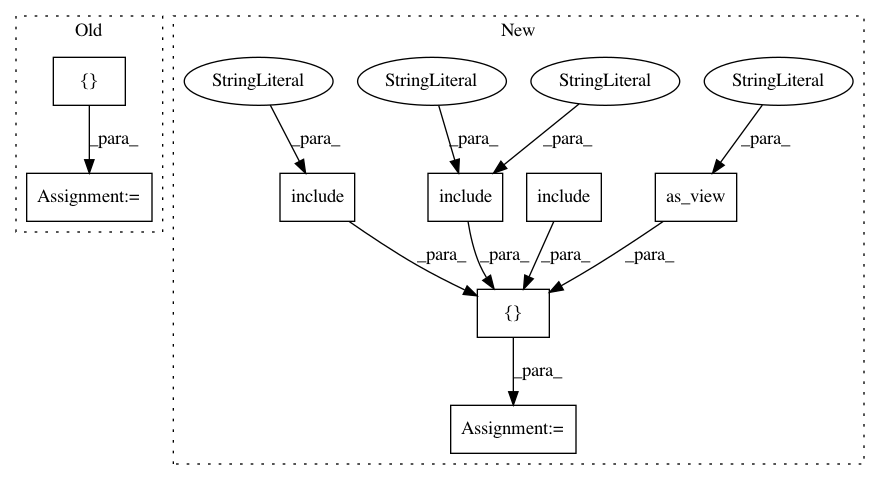

01f81c2a8196a7e6089e9a1cb210eeebc0b3de26,app/comic/urls.py,,,#,9
Before Change
admin.autodiscover()
urlpatterns = [
// main page
url(r"^$", comicmain, name="home"),
url(
r"^robots\.txt/$",
TemplateView.as_view(
template_name="robots.txt",
content_type="text/plain",
),
),
// Uncomment the next line to enable the admin:
url(r"^admin/", include(admin.site.urls)),
url(r"^site/", include("comicsite.urls"), name="site"),
// Do not change the namespace without updating the view names in
// evaluation.serializers
url(r"^api/", include("api.urls", namespace="api")),
// Used for logging in and managing profiles. This is done on the framework
// level because it is too hard to get this all under each project
url(r"^accounts/", include("profiles.urls")),
url(r"^socialauth/", include("social_django.urls", namespace="social")),
// WYSIWYG editor for HTML
url(r"^ckeditor/", include("ckeditor_uploader.urls")),
url(r"^challenges/", include("challenges.urls", namespace="challenges")),
// ========== catch all ====================
// when all other urls have been checked, try to load page from main project
// keep this url at the bottom of this list, because urls are checked in
// order
url(r"^(?P<page_title>[\w-]+)/$", comicmain, name="mainproject-home"),
url(r"^media/(?P<project_name>[\w-]+)/(?P<path>.*)$", serve),
]
After Change
admin.autodiscover()
urlpatterns = [
// main page
url(r"^$", comicmain, name="home"),
url(
r"^robots\.txt/$",
TemplateView.as_view(
template_name="robots.txt",
content_type="text/plain",
),
),
// Uncomment the next line to enable the admin:
url(r"^admin/", include(admin.site.urls)),
url(r"^site/", include("comicsite.urls"), name="site"),
// Do not change the namespace without updating the view names in
// evaluation.serializers
url(r"^api/", include("api.urls", namespace="api")),
// Used for logging in and managing profiles. This is done on the framework
// level because it is too hard to get this all under each project
url(r"^accounts/", include("profiles.urls")),
url(r"^socialauth/", include("social_django.urls", namespace="social")),
url(r"^challenges/", include("challenges.urls", namespace="challenges")),
// ========== catch all ====================
// when all other urls have been checked, try to load page from main project
// keep this url at the bottom of this list, because urls are checked in
// order
url(r"^(?P<page_title>[\w-]+)/$", comicmain, name="mainproject-home"),
url(r"^media/(?P<project_name>[\w-]+)/(?P<path>.*)$", serve),
]
In pattern: SUPERPATTERN
Frequency: 3
Non-data size: 8
Instances
Project Name: comic/grand-challenge.org
Commit Name: 01f81c2a8196a7e6089e9a1cb210eeebc0b3de26
Time: 2018-03-12
Author: jamesmeakin@gmail.com
File Name: app/comic/urls.py
Class Name:
Method Name:
Project Name: comic/grand-challenge.org
Commit Name: d018f4185cf7dd87fa56f47a8e55d5f0eacd0292
Time: 2020-01-22
Author: code@jmsmkn.com
File Name: app/grandchallenge/subdomains/urls.py
Class Name:
Method Name:
Project Name: chakki-works/doccano
Commit Name: b4b87fb3caf5999a71868dd92142abe6a9062418
Time: 2020-12-01
Author: light.tree.1.13@gmail.com
File Name: app/app/urls.py
Class Name:
Method Name: